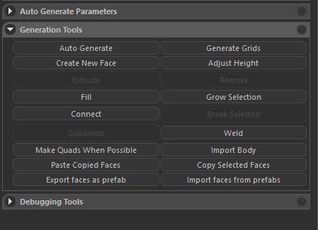
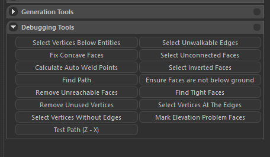
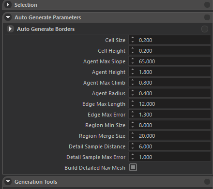

NAVIGATION MESH INSPECTOR
Tools
These tools help you to generate and manipulate the navigation mesh:
Generation Tools

- Auto Generate: As the name implies, automatically generates the navigation mesh with resppect to the parameters above.
- Generate Grids: Generates grid navigation mesh for the terrain only. It ignores the entities on the scene.
- Create New Face: Creates a new navigation mesh quad face on the coordinates where the camera is.
- Extrude:
- Remove: Removes the selected navigation mesh edge.
- Fill: Fills between the selected navigation mesh vertices and forms a face.
- Grow Selection: Grows the selection by selecting the adjacent elements to the selected elements (Works for all vertex, edge and face structures)
- Connect: Connects the selected two navigation mesh vertices by drawing an edge between them.
- Subdivide: Divides the navigation mesh edge by putting a vertex on the middle of it. This vertex is connected to the adjacent vertices and divides the face of interest.
- Weld: Removes vertices forming the edge and makes the edge one single vertex. It connects the old adjacent vertices to the newly generated vertex.
- Import Faces From Prefabs: Imports faces which were exported for later use.
- Import Body:
- Make Quads When Possible: Selects adjacent triangle faces, which can construct quads (which do not form a concave polygon). This is not going to construct the most optimal nav mesh, having faces with the greatest surface areas, but it will locally select the triangles forming the greatest surface area. It will still reduce the total number of faces strongly.
Debugging Tools

- X-Z Keys: Puts two different spheres per key, and when both are put, gives statistics about the path defined between these two spheres.
- Select Vertices Below Entities: The name implies the purpose.
- Select Unwalkable Edges:
- Fix Concave Faces: Makes the concave faces convex.
- Select Unconnected Faces:
- Calculate Auto Weld Points:
- Select Inverted Faces: Finds and selects the inverse faces, facing towards the terrain.
- Find Path:
- Paste Copied Faces: The name implies the purpose.
- Copy Selected Faces: The name implies the purpose.
- Export Faces as Prefab: Exports the selected faces for later use.
- Ensure Faces Are Not Below Ground: The name implies the puspose.
- Remove Unreachable Faces: Removes the faces which are not connected to any island, in which there is a spawn point. (Spawn points are decided according to the entities in Prefabs/editor_spawnpoints.xml, also entities containing AnimationPoint script.)
- Find Tight Faces: Finds faces whose surface area is below the desired value, and selects them. You can press the “delete” button to remove these faces. After doing this, do not forget to “Remove Unused Vertices”, which I’ll be mentioning a few lines below.
- Remove Unused Vertices: This will remove the vertices which are not connected to any face.
- Select Vertices At The Edges: Selects the vertices connected to only 2 edges, hence, not being a part of a continuous face component.
- Select Vertices Without Edges: This will just select the faces which are not connected to any edge or face.
- Mark Elevation Problem Faces: Faces having distance greater than 1.2 meters to the bottom (a mesh or the terrain) will be selected for debug purposes.
Auto Generation Parameters

These parameters arrange the precision, extend and operation details of the navigation mesh generation. Explanation of the parameters are as following:
- Build Detailed Nav Mesh: Checking this box makes use of the following parameters and builds a detailed nav mesh according to them. If not checked, the following parameters won’t make any difference.
- Cell Size: Defines the horizontal edge length of the sample voxel examined by the Recast Library.
- Cell Height: Defines the vertical edge length of the sample voxel examined by the Recast Library.
- Agent Max Slope: Maximum angle in which the agent can climb (in degrees).
- Agent Height: The name defines itself.
- Agent Max Climb: Maximum meters the agent can step on.
- Agent Radius: The name defines itself.
- Edge Max Length: Maximum possible edge length of the polygons generated by Recast.
- Edge Max Error: The maximum distance a simplfied contour’s border edges should deviate the original raw contour. (Definition from the Recast document)
- Region Min Size: The minimum number of cells [voxels] allowed to form isolated island areas. (Definition from the Recast document)
- Region Merge Size: Any regions with a span count smaller than this value will, if possible, be merged with larger regions. (Definition from the Recast document)
- Detail Sample Distance: Sets the sampling distance to use when generating the detail mesh. (For height detail only.) (Definition from the Recast document)
- Detail Sample Max Error: The maximum distance the detail mesh surface should deviate from heightfield data. (For height detail only.) (Definition from the Recast document)
Auto Generation Steps
- First, fill in the blank fields in the parameters tab. You may prefer to stick to the default parameters as well.
- Click on the “Auto Generate” button (generation tools) and wait for the operation to end.
- Click on the “Make Quads When Possible” button (generation tools) to quadify the triangles which form a convex shape.
- Click on the “Find Tight Faces” button (debugging tools) to find and select the tight faces on the borders.
- Press the “Delete” button on the keyboard to delete these selected faces.
- If there are still tight faces appearing on the borders, apply the same procedure until it all ends.
- Click on the “Remove Unused Vertices” button (debugging tools) to remove vertices which are no longer connected to any face.
- Manually correct the regions which are broken due to the removed tight faces.
- You can debug and polish further using the tools mentioned before.